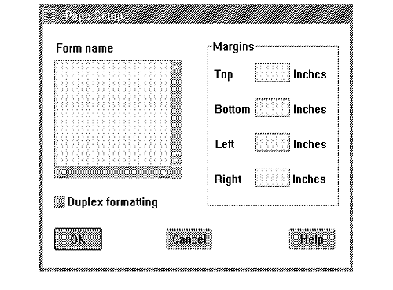

The page setup dialog is concerned with formatting options for the document. The user must be able to specify the form name, margins, and other application-specific formatting options such as page duplexing; that is, different formats for left and right pages in a multi-page document.
Note: The application is responsible for storing the user-defined margins for the form. The application must not allow the user to specify margins smaller than those returned by the printer driver.
Application Page Setup Dialog